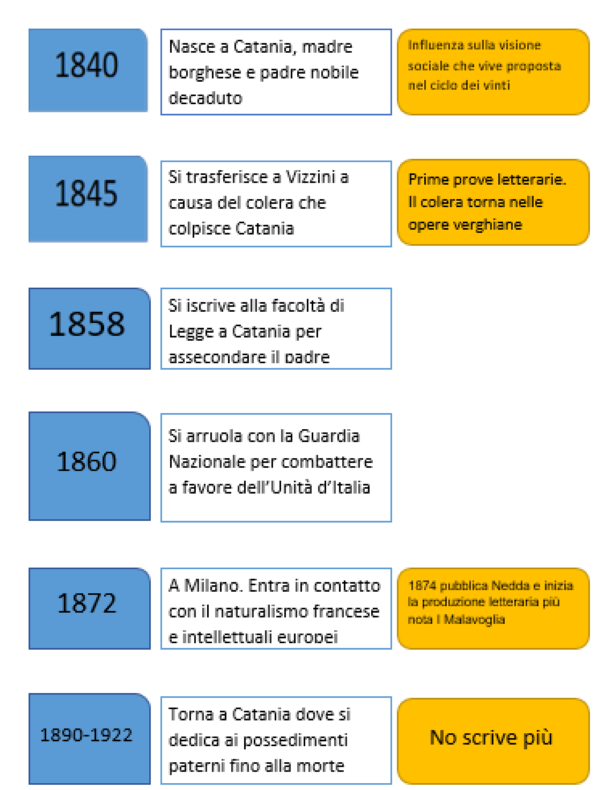

Verga è il principale esponente del Verismo italiano, riproponendo le idee del Naturalismo Francese, ma con una visione che si discosta dal positivismo, improntata a una realtà pessimistica.
Giovanni Verga nasce a Catania il 2 settembre del 1840 da madre appartenente all'alta borghesia e da un padre legato a una famiglia nobiliare ma in decadenza.
Nel 1845, a causa dell'epidemia di colera, insieme alla famiglia si trasferisce a Vizzini dove scrive il suo primo romanzo all'età di 15 anni. Nel 1858, per assecondare la volontà del padre si iscrive alla facoltà di legge a Catania, ma due anni dopo decide di arruolarsi con la Guardia Nazionale dei garibaldini sbarcati in Sicilia per combattere a favore dell'Unità d'Italia
Nel 1872 si trasferisce a Milano, venendo in contatto con autori del mondo europeo e con il naturalismo francese, condividendo le sue idee anche con l'amico Luigi Capuana. Rimase nel contesto milanese per 20 anni, considerati tra i più importanti dal suo punto di vista letterario. Infatti nel 1874 pubblica la novella Nedda, dove si inizia a riscontrarsi il romanzo di evoluzione del verismo, e nel 1881 con I Malavoglia, il suo romanzo più importante.
Nel 1890 ritorna a Catania, dedicandosi ai possedimenti del padre allontanandosi dalla letteratura, dove morirà nel 1922
